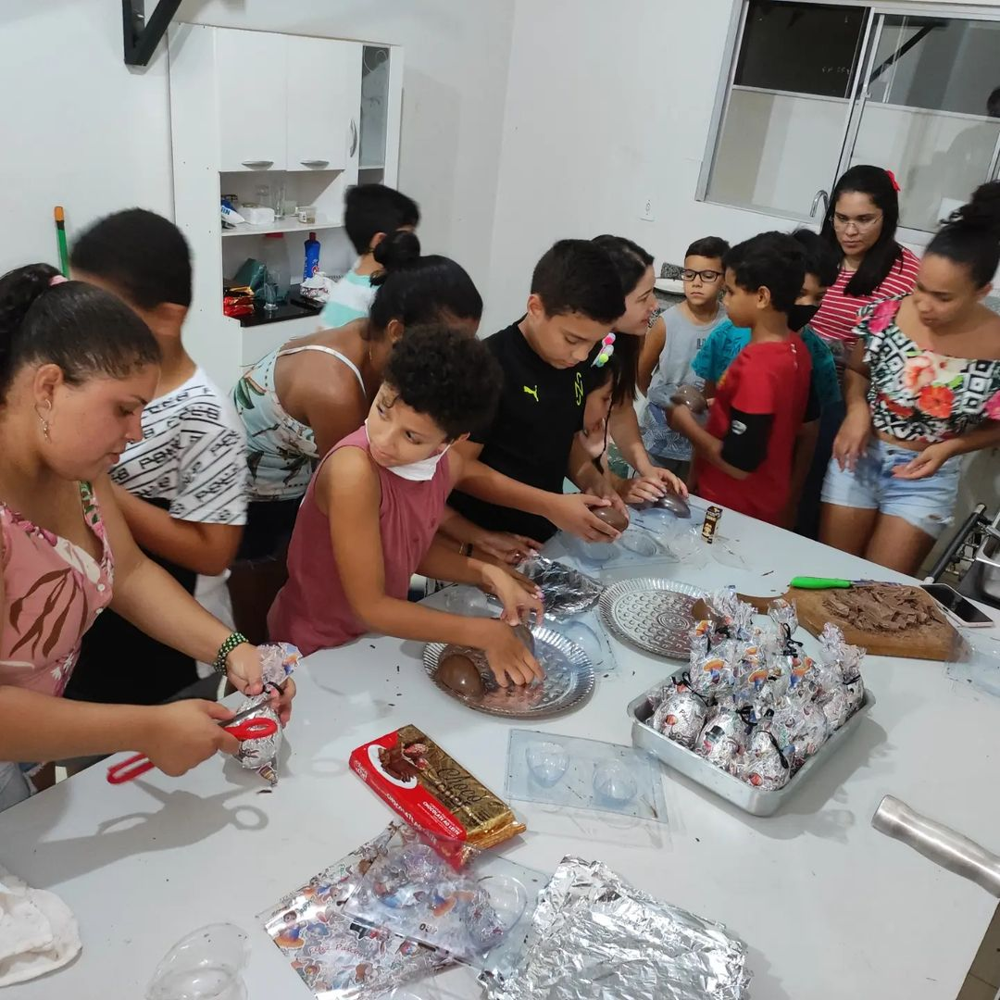

Atividade Social
Construindo a base no qual nosso futuro será edificado.
A Ordem dos Escudeiros é uma organização juvenil, para garotos com idade entre sete anos completos e onze anos completos, patrocinada pela Ordem DeMolay, que tem por objetivo engajar os jovens nas atividades realizadas pela DeMolay para um futuro ingresso.
As virtudes trabalhadas pela Ordem dos Escudeiros são:

Um lugar onde meninos aprendem a socializar, cuidar do meio ambiente e se tornar agentes de mudança. Aqui, eles aprendem a trabalhar em equipe, descobrem a importância de ajudar o próximo e são inspirados a melhorar o mundo ao seu redor. Junte-se a nós e prepare seu filho para um futuro brilhante, repleto de valores, amizade e um senso de propósito.
Juntar-seRelatos que mostram a importância do Castelo.

Bernardo José
Membro do Capítulo Caculeense e Escudeiro Sênior
Eu acredito, e acho que a ordem dos escudeiros é importante, pois ela começa prepara a criança desde pequena para as responsabilidades da vida, mostrando qual o lado bom, brincadeiras, mas também, o lado da responsabilidade, atividades, além disso mostrando e ensinando como um homem deve ser, doar alimentos, pensar ao próximo, e se juntar com todos, sendo uma pessoa melhor para assim se tornar demolay futuramente, reforça também aquilo que aprendeu em casa, e se caso não aprendeu, ensinar
Atividade Social
Entreterimento
Caminhada Ecológica